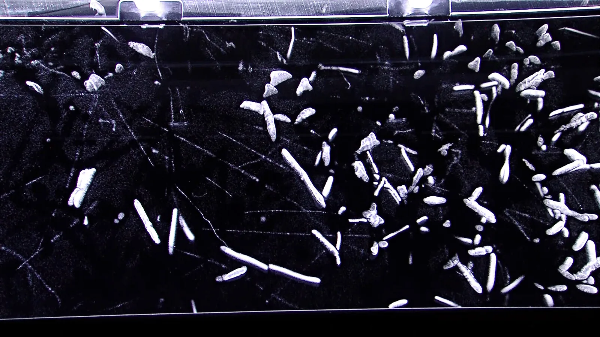
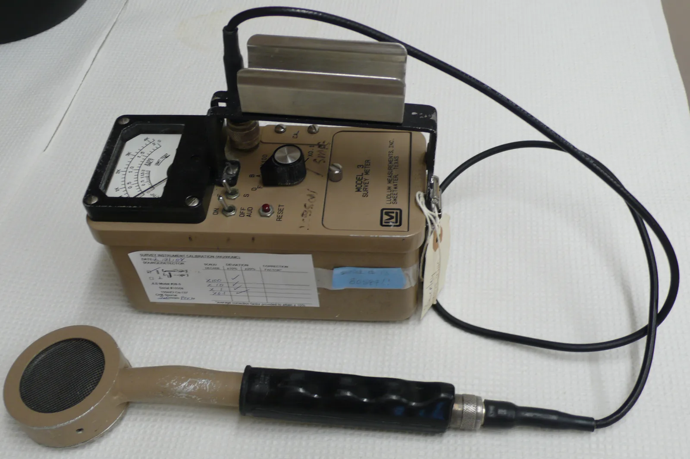

The decay law and half-life
Why does the activity of a hospital's technetium preparation always halve in about six hours, even though nobody can predict when a single nucleus will decay?
Prior knowledge
- A radioactive nucleus decays in alpha, beta or gamma decay and at the same time emits ionising radiationchapter The atomic nucleus and radioactive decay
Core path: follow the steps in order. Besides calculations, the core path includes investigations, explanations and graphs. Tasks marked Optional give extra practice. Optional tasks: 4.
Think about it
In the isotope department of a hospital a patient is given a tracer that contains radioactive technetium-$99\text{m}$. In the morning the activity of the preparation is $740\,\text{MBq}$, after six hours about $370\,\text{MBq}$ and after another six hours about $185\,\text{MBq}$. The same schedule repeats every day, in every hospital. Yet the moment of decay of a single technetium nucleus is completely random: nobody can say whether it decays during the next second or only tomorrow.
How can a group of randomly decaying nuclei follow such a precise schedule?
Optional Review: beta decay
Predict
Make your predictions before investigating 2 questions
Prediction 1: two half-lives
Prediction 2: a small and a large sample
Investigate
A sample initially contains $N_0$ radioactive nuclei. Start the time or move the time slider and follow which nuclei decay and how the number $N$ of undecayed nuclei decreases.
Simulation
How to use
Start runs the time and Stop stops it; the time can also be moved with the slider Time $0$–$120\,\text{s}$. Choose the Nuclei at the start $N_0$ ($20$, $100$, $400$ or $1600$) and the half-life $T_{1/2}$ between $10$ and $40\,\text{s}$. Draw chooses one of five random series: the same series always gives the same result, a different series gives different nuclei and different moments of decay. On the left (at the top on a narrow screen) every nucleus is an orange disc until it decays and becomes a grey ring; a ray leaves a nucleus that has just decayed. In the graph the orange step line is the number $N$ of undecayed nuclei of the series, and the pale dashed line is the decay law. The grey dashed lines mark the moment $T_{1/2}$ and the number $\tfrac{1}{2}N_0$. Speed changes only the pace of the passing of time.
Assumptions of the model
The model contains the nuclei of one imaginary isotope whose half-life is short so that decay can be seen in a moment; for example, the half-life of barium-$137\text{m}$ is $2.55\,\text{min}$. Every nucleus has at every moment the same probability of decaying per unit of time, $\lambda = \tfrac{\ln 2}{T_{1/2}}$, regardless of its age and of the other nuclei. The moment of decay of a nucleus is drawn according to this probability, and the draw of a series can be repeated. The daughter nucleus is assumed to be stable. The model counts the nuclei exactly, so it has no radiation meter, no background radiation and no measurement uncertainty. The readings are values of the model, not measurements.
How the calculation works
For every nucleus a uniformly distributed random number $u$ between $0$ and $1$ is drawn, and its moment of decay is $\tau = -\tfrac{T_{1/2}}{\ln 2} \ln u$. With this draw every nucleus decays in any short interval $\Delta t$ with the probability $\lambda \Delta t$. The number $N$ of undecayed nuclei is the number of nuclei with $\tau > t$. The fraction is $N : N_0$, and $t : T_{1/2}$ tells the number of half-lives passed. The dashed line is $N_0 \left(\tfrac{1}{2}\right)^{t/T_{1/2}}$.
Experiment 1: one half-life after another
Test prediction 1. The sample contains $1600$ nuclei, the half-life is $20\,\text{s}$ and the draw is series 1. Change only the time: record the number $N$ of undecayed nuclei and the fraction $N : N_0$ at least at the times $t = 0$, $20$ and $40\,\text{s}$, and if you like also at $60\,\text{s}$.
Initial state: nuclei at the start $N_0$ = $1600$, half-life = $20\,\text{s}$, time $t$ = $0\,\text{s}$, draw: series 1. Kept constant: nuclei at the start $N_0$, half-life, draw. Varied: time $t$.
| time $t$ | $N$ | $N/N_0$ |
|---|
Experiment 2: a small sample, different draws
Test prediction 2. The sample contains $20$ nuclei, the half-life is $20\,\text{s}$ and the time is $t = 20\,\text{s}$, that is, one half-life. Change only the draw: record $N$ and $N : N_0$ at least from series 1, 2 and 3, and if you like from all five.
Initial state: nuclei at the start $N_0$ = $20$, half-life = $20\,\text{s}$, time $t$ = $20\,\text{s}$, draw: series 1. Kept constant: nuclei at the start $N_0$, half-life, time $t$. Varied: draw.
| draw | $N$ | $N/N_0$ |
|---|
Experiment 3: a large sample, different draws
Repeat experiment 2 with a large sample. The sample contains $1600$ nuclei, and the time is again one half-life. Change only the draw and record $N$ and $N : N_0$ from at least two series. Compare the variation of the fractions with experiment 2.
Initial state: nuclei at the start $N_0$ = $1600$, half-life = $20\,\text{s}$, time $t$ = $20\,\text{s}$, draw: series 1. Kept constant: nuclei at the start $N_0$, half-life, time $t$. Varied: draw.
| draw | $N$ | $N/N_0$ |
|---|
Conclusion: chance and law
On the basis of your tables, write: What happened to the number of undecayed nuclei during every half-life? Why did the results for $20$ nuclei vary more from one series to another than those for $1600$ nuclei? How can random decay still follow a precise law?
Model answer
In experiment 1 the undecayed numbers, as values of the model, were $1600$, $792$, $399$ and $208$ at the times $0$, $20$, $40$ and $60\,\text{s}$: during every half-life the number halved, so after two half-lives about a quarter was left, not zero. In experiment 2, after one half-life, of $20$ nuclei $7$–$13$ were undecayed, so the fraction varied between $0.35$ and $0.65$, whereas in experiment 3 the fraction of $1600$ nuclei stayed between $0.489$ and $0.509$. Every nucleus has the same probability of decaying per unit of time, so in a given time on average the same fraction of the remaining nuclei decays. A single nucleus is unpredictable, but in a large group the random deviations are relatively small. A real sample contains for example $10^{15}$ nuclei, so the decay law holds in practice exactly.
Assess your own answer
Tick the points your own answer already contains.
Theory
Key idea

The decay of a single nucleus is random
A radioactive nucleus decays and becomes another nucleus (chapter The atomic nucleus and radioactive decay), but the moment of decay cannot be predicted. Of two identical nuclei, one may decay at once and the other only after years. All that can be predicted is how likely a nucleus is to decay within a given time. This probability is the same for all nuclei of the same isotope, and in practice it does not depend on the temperature, the pressure or the chemical bonds of the surroundings. Nor does it depend on the age of the nucleus: a nucleus does not grow old. A nucleus that has survived without decaying for a long time is just as likely to decay during the next second as a newly formed one.
A large group of nuclei behaves regularly
Because every nucleus has the same probability of decaying, about the same fraction of the remaining nuclei decays in a given time. In the figure, of the same hundred nuclei about half are left after one half-life and about a quarter after two, but the decayed nuclei are in random places. In a small group chance shows: the fraction can differ clearly from a half. An ordinary sample, however, contains for example $10^{15}$ nuclei, and then the relative deviations are so small that they cannot be noticed.
Half-life
The half-life $T_{1/2}$ is the time in which half of the undecayed nuclei of a sample decay. During the next half-life half of the remaining nuclei decay, so after two half-lives a quarter is left, not nothing. The half-life is a property of the isotope: it does not depend on the size of the sample or on when the timing is started. The table lists some half-lives; the unit $\text{d}$ is a day and $\text{a}$ a year.
| Isotope | $T_{1/2}$ | Where |
|---|---|---|
| barium-$137\text{m}$ | $2.55\,\text{min}$ | school decay experiment |
| fluorine-18 | $110\,\text{min}$ | PET scan |
| technetium-$99\text{m}$ | $6.01\,\text{h}$ | isotope imaging |
| radon-222 | $3.82\,\text{d}$ | radon in indoor air |
| iodine-131 | $8.02\,\text{d}$ | thyroid treatment |
| caesium-137 | $30.1\,\text{a}$ | Chernobyl fallout |
| carbon-14 | $5700\,\text{a}$ | radiocarbon dating |
| uranium-238 | $4.47 \cdot 10^{9}\,\text{a}$ | bedrock |
Source: literature values from the NNDC NuDat 3 database (Brookhaven National Laboratory), rounded to three significant figures.

Activity
The activity $A$ of a sample is the number of decays in it per unit of time. Its unit is the becquerel: $1\,\text{Bq}$ is one decay per second, that is, $1\,\tfrac{1}{\text{s}}$. Because every nucleus is equally likely to decay, the activity is directly proportional to the number of undecayed nuclei: when half of the nuclei are left, the activity has also halved. A radiation meter does not measure the activity directly. It counts the pulses from the quanta of radiation that hit its detector. The number of pulses is proportional to the activity, but the background radiation of the surroundings is always added to it.
The decay law
The half-life in the form of a law
If a sample initially contains $N_0$ undecayed nuclei, every half-life multiplies the number by $\tfrac{1}{2}$. After a time $t$ the number of undecayed nuclei is
$$N = N_0 \left(\frac{1}{2}\right)^{t/T_{1/2}}$$
where $N$ is the number of undecayed nuclei at the time $t$, $N_0$ their number at the time $t = 0$ and $T_{1/2}$ the half-life. The exponent $\tfrac{t}{T_{1/2}}$ tells how many half-lives have passed, and it need not be an integer. The time $t$ and the half-life must be in the same unit. The law describes the behaviour of a large group of nuclei: in a small group the real $N$ deviates from it randomly.
The decay constant and activity
The probability of a nucleus decaying per unit of time is described by the decay constant $\lambda$, whose unit is $\tfrac{1}{\text{s}}$. When there are $N$ nuclei, on average $\lambda N$ nuclei decay per second, so the activity is
$$A = \lambda N$$
where $A$ is the activity ($\text{Bq}$), $\lambda$ the decay constant ($\tfrac{1}{\text{s}}$) and $N$ the number of undecayed nuclei. The decay law can also be written with the natural exponential function:
$$N = N_0 e^{-\lambda t}$$
At the half-life $N = \tfrac{1}{2}N_0$, so $e^{-\lambda T_{1/2}} = \tfrac{1}{2}$, that is, $\lambda T_{1/2} = \ln 2$. The decay constant and the half-life are therefore related by the equation
$$\lambda = \frac{\ln 2}{T_{1/2}}$$
where $\ln 2 \approx 0.693$. For example, for technetium-$99\text{m}$ $\lambda = \tfrac{0.693}{6.01 \cdot 3600\,\text{s}} \approx 3.20 \cdot 10^{-5}\,\tfrac{1}{\text{s}}$: of a million nuclei, on average about $32$ decay per second. Because $A = \lambda N$ and $\lambda$ is constant, the activity decreases according to the same law as the number of nuclei:
$$A = A_0 \left(\frac{1}{2}\right)^{t/T_{1/2}}$$
where $A_0$ is the activity at the time $t = 0$. The mass of the undecayed substance decreases in the same way, because it is proportional to the number of nuclei.
Fitting an exponential function to measurement data
The half-life is determined by measuring the number of pulses of a sample at regular intervals. In real series of measurements the data points are usually not exactly on the curve of the model, because of the randomness of decay and the measurement uncertainty. That is why the model
$$y = A\,e^{-Ct} + B$$
is fitted to the points, where $y$ is the number of pulses in a measuring period, $C$ the decay constant $\lambda$ and $B$ the number of pulses of the background radiation in the same period. The coefficient $A$ of the program is the number of pulses at the time $t = 0$ without the background, not the activity. The half-life is obtained from the coefficient of the fit: $T_{1/2} = \tfrac{\ln 2}{C}$.
In Graphical Analysis Pro the fit is made as follows:
- In the start window, choose Manual Entry and type the time (s) and the number of pulses into the table.
- Open the menu of graph tools from the icon in the lower left corner of the graph and choose Curve Fit.
- From the drop-down menu, choose the exponential fit whose equation is of the form $A \cdot \exp(-C \cdot x) + B$ (Natural Exponent), and accept it with the Apply button.
- Read the coefficients $A$, $B$ and $C$ from the result box.
The data in the figure are simulated from a decay experiment with barium-$137\text{m}$. The fit gives $C = 0.004564\,\tfrac{1}{\text{s}}$, so $T_{1/2} = 0.6931 : 0.004564\,\tfrac{1}{\text{s}} \approx 152\,\text{s}$. The literature value is $2.552\,\text{min} = 153\,\text{s}$, so the difference is less than one percent. The coefficient $B \approx 4.8$ pulses in a period of $10\,\text{s}$ is the level of the background radiation, towards which the points approach.
Common misconception
Many people think that if half of the nuclei decay in one half-life, the rest decay in the next, and after two half-lives the sample is empty. Decay, however, does not proceed at a constant rate. In every half-life half of the remaining nuclei decay, so a quarter is left, then an eighth, and so on. The activity decreases at the same pace, because the fewer nuclei are left, the fewer decays there are.
Another mistake is to think that a nucleus that has lasted a long time is "due" and therefore more likely to decay. A nucleus has no memory: its probability of decaying during the next second is always the same, and that is why the same fraction of the remaining nuclei decays in every half-life.
Summary
- The moment of decay of a single nucleus cannot be predicted. Every nucleus of the same isotope has the same probability of decaying per unit of time, and it does not depend on the age of the nucleus.
- The half-life $T_{1/2}$ is the time in which half of the undecayed nuclei decay: $N = N_0 \left(\tfrac{1}{2}\right)^{t/T_{1/2}} = N_0 e^{-\lambda t}$.
- The decay constant is $\lambda = \tfrac{\ln 2}{T_{1/2}}$, and the activity is $A = \lambda N$, with the unit $1\,\text{Bq} = 1\,\tfrac{1}{\text{s}}$. The activity decreases according to the same decay law as the number of nuclei.
- The half-life is determined by fitting the function $y = A\,e^{-Ct} + B$ to the data points: $C$ is the decay constant and $B$ the background radiation, and $T_{1/2} = \tfrac{\ln 2}{C}$.
Optional Return to your predictions
Compare your predictions with the values of the model in the experiments. Then return to the question at the start: why does the activity of the technetium preparation halve every time in six hours, even though the moment of decay of a single nucleus cannot be known? What would happen if the preparation contained only ten nuclei?
Would you change your prediction?
Examples
Once you have studied the chapter's theory, move on to the guided examples. In the first you follow a worked solution step by step; in the next ones you make the choices yourself, and the hints help if you get stuck.
Example 1: Activity of an iodine-131 capsule
An iodine-131 capsule made for the treatment of thyroid cancer has an activity of $550\,\text{MBq}$ at the time of manufacture. The half-life of iodine-131 is $8.02\,\text{d}$. What is the activity of the capsule $20.0\,\text{d}$ later?
Step 1/7
Known and asked. The initial activity is $A_0 = 550\,\text{MBq}$, the half-life $T_{1/2} = 8.02\,\text{d}$ and the time $t = 20.0\,\text{d}$. The activity $A$ at the time $t$ is asked.
Step 2/7
Principle. The activity is proportional to the number of undecayed nuclei, $A = \lambda N$, so it follows the same decay law: every half-life halves it. The capsule contains an enormous number of nuclei, so random deviations from the law are insignificant.
Step 3/7
Formula solved. The asked activity is obtained directly from the decay law:
$$A = A_0 \left(\tfrac{1}{2}\right)^{t/T_{1/2}}$$
Step 4/7
Unit conversions. None are needed: the time and the half-life are both in days, so their ratio is a pure number, and the activity is obtained in the same unit as $A_0$, that is, in megabecquerels.
Step 5/7
Substitution. $$\begin{aligned} A &= A_0 \left(\tfrac{1}{2}\right)^{t/T_{1/2}} \\ &= 550\,\text{MBq} \cdot \left(\tfrac{1}{2}\right)^{20.0\,\text{d} / 8.02\,\text{d}} \\ &= 550\,\text{MBq} \cdot \left(\tfrac{1}{2}\right)^{2.4938} \\ &= 550\,\text{MBq} \cdot 0.17754 \\ &= 97.65\,\text{MBq} \end{aligned}$$
Step 6/7
Result. After $20.0\,\text{d}$ the activity of the capsule is about $97.6\,\text{MBq}$, with three significant figures like the half-life $8.02\,\text{d}$ and the time $20.0\,\text{d}$.
Step 7/7
Reasonableness. A little less than two and a half half-lives passed. After two half-lives the activity would be $550\,\text{MBq} : 4 \approx 138\,\text{MBq}$ and after three $550\,\text{MBq} : 8 \approx 69\,\text{MBq}$. The result $97.6\,\text{MBq}$ is between these, as it should be.
Optional Example 2: Find the error
Example 3: Fit an exponential function to measurement data
Simulated example data · the pulse counts are drawn with random numbers from a model in which the half-life of protactinium-$234\text{m}$ is the literature value $1.159\,\text{min} = 69.5\,\text{s}$ (NNDC NuDat 3) and the background radiation is $0.5$ pulses per second. The data are not a measurement.
In a school decay experiment protactinium-$234\text{m}$ is separated from a uranium compound into a liquid, and a radiation meter counts pulses in periods of $10\,\text{s}$ at intervals of $20\,\text{s}$. The $t$ of the table is the start of the period.
| $t$ (s) | pulses | $t$ (s) | pulses | $t$ (s) | pulses |
|---|---|---|---|---|---|
| $0$ | $380$ | $140$ | $104$ | $280$ | $33$ |
| $20$ | $317$ | $160$ | $76$ | $300$ | $21$ |
| $40$ | $257$ | $180$ | $60$ | $320$ | $24$ |
| $60$ | $211$ | $200$ | $58$ | $340$ | $20$ |
| $80$ | $165$ | $220$ | $43$ | $360$ | $7$ |
| $100$ | $150$ | $240$ | $41$ | $380$ | $14$ |
| $120$ | $113$ | $260$ | $35$ | $400$ | $12$ |
You can copy the data from the box below and paste it into the table of Graphical Analysis Pro (Manual Entry).
t (s) pulses
0 380
20 317
40 257
60 211
80 165
100 150
120 113
140 104
160 76
180 60
200 58
220 43
240 41
260 35
280 33
300 21
320 24
340 20
360 7
380 14
400 12
Fit the function $y = A\,e^{-Ct} + B$ to the data in Graphical Analysis Pro. What is the half-life of protactinium-$234\text{m}$ on the basis of the fit? Answer in seconds.
Hint 1: a guiding question
Type or paste the time and the number of pulses into the table. From the icon in the lower left corner of the graph open the graph tools and choose Curve Fit.
Hint 2: what is the connection
Choose the exponential fit whose equation is $A \cdot \exp(-C \cdot x) + B$ (Natural Exponent). Its coefficient $C$ is the decay constant $\lambda$, and $T_{1/2} = \tfrac{\ln 2}{C}$.
Hint 3: an intermediate step
The fit gives $C \approx 0.0101\,\tfrac{1}{\text{s}}$. Divide the number $\ln 2 \approx 0.693$ by this.
Show the solution
Given
the pulse counts of a protactinium-$234\text{m}$ sample in periods of $10\,\text{s}$ at intervals of $20\,\text{s}$ from the time $t = 0$ to the time $t = 400\,\text{s}$ ($21$ points in the table), the model $y = A\,e^{-Ct} + B$
Asked
the half-life $T_{1/2}$ in seconds
Principle
The number of pulses is proportional to the activity of the sample, which decreases exponentially according to the decay law, and a constant number of pulses of background radiation is added to it. That is why the model has the constant term $B$. The least-squares fit chooses the coefficients $A$, $B$ and $C$ for which the sum of the squares of the vertical deviations of the points is smallest; the coefficient $C$ is the decay constant $\lambda$.
Reading the graph
The points first drop steeply and level off at the end at about $5$–$15$ pulses, which is close to the background. From the result box of the fit we read $A = 376.6$, $C = 0.01013\,\tfrac{1}{\text{s}}$ and $B = 5.54$ pulses in $10\,\text{s}$; the points are on both sides of the curve, so the model fits the data.
Formula
$e^{-C T_{1/2}} = \tfrac{1}{2}$, from which $C T_{1/2} = \ln 2$ and $T_{1/2} = \dfrac{\ln 2}{C}$
Conversions
None are needed: the time is in seconds, so $C$ is obtained in the unit $\tfrac{1}{\text{s}}$ and the half-life in seconds.
Substitution
Answer
$68.4\,\text{s}$
Three significant figures; that is enough, because owing to the randomness of decay the result of the fit can differ from the true value by a percent or two.
Reasonableness
After the background, the number of pulses at the start is about $380 - 5 = 375$, and half of it, $188$, falls in the table between the times $60\,\text{s}$ ($211$) and $80\,\text{s}$ ($165$), that is, at about $70\,\text{s}$. The literature value is $1.159\,\text{min} = 69.5\,\text{s}$, and the difference is about $1.6\,\%$.
Self-check
Finally, assess whether you have reached the chapter's goals. If an answer is wrong, you get a suggestion of what to review.
1. Reflection task
Answer on your own first and only then open the answer.
- The half-life of a sample is $2.0\,\text{h}$. What fraction of its nuclei is undecayed after $6.0\,\text{h}$?
Answer
Three half-lives pass, and each halves the number of remaining nuclei: $\left(\tfrac{1}{2}\right)^{3} = \tfrac{1}{8}$, that is, $12.5\,\%$ of the nuclei.
- Why does the function $y = A\,e^{-Ct} + B$ fitted to pulse data have the constant term $B$?
Answer
A radiation meter always counts background radiation too, and it does not decrease as the sample decays. The constant term $B$ describes this background. Without it the fit would try to explain the pulses of the background as slow decay, and the half-life would become too long.
2. Concept task
3. Calculation task: Read the half-life from the graph
The graph shows the activity of an unknown radioactive sample as a function of time. Read the half-life of the sample from the graph. Answer in hours.
Hint 1: a guiding question
What is the activity at the time $t = 0$? And half of it?
Hint 2: what is the connection
Find the point where the curve is at half of its initial value and read its time from the horizontal axis.
Hint 3: an intermediate step
The initial value is $720\,\text{kBq}$, so find the point where $A = 360\,\text{kBq}$.
Show the solution
Given
the activity $A$ of the graph as a function of time $t$, the grid spacing $1\,\text{h}$ and $50\,\text{kBq}$
Asked
the half-life $T_{1/2}$ in hours
Principle
The activity is proportional to the number of undecayed nuclei, so it halves during every half-life. The half-life is therefore the time in which the activity decreases to a half from any starting moment.
Reading the graph
At the time $t = 0$ the graph starts from the value $A_0 = 720\,\text{kBq}$. Half of it is $360\,\text{kBq}$. A horizontal line from $360\,\text{kBq}$ meets the curve at the time $t = 5.0\,\text{h}$. Check: at $180\,\text{kBq}$ the curve is at the time $10\,\text{h}$.
Formula
$A = A_0 \left(\tfrac{1}{2}\right)^{t/T_{1/2}}$; when $A = \tfrac{1}{2}A_0$, the exponent is $\tfrac{t}{T_{1/2}} = 1$, so $T_{1/2} = t$
Conversions
None are needed: the time is read directly in hours.
Substitution
which is reached at the time $t = 5.0\,\text{h}$, so $T_{1/2} = 5.0\,\text{h}$
Answer
$5.0\,\text{h}$
Two significant figures, because the time can be read from the graph with an accuracy of about $0.2\,\text{h}$.
Reasonableness
After two half-lives, that is, at $10\,\text{h}$, the activity should be a quarter, $180\,\text{kBq}$, and at $20\,\text{h}$ a sixteenth, $45\,\text{kBq}$. The graph agrees with both.
Suggestion: one answer does not show everything you can do, but review the theory and do the core exercises.
Optional 4. Explanation task: Explain and transfer
Two samples contain the same number of radioactive nuclei. Sample P contains technetium-$99\text{m}$ ($T_{1/2} = 6.01\,\text{h}$) and sample Q caesium-137 ($T_{1/2} = 30.1\,\text{a}$).
Which sample has the greater activity now? Which is more active after a year? Justify with the equation $A = \lambda N$.
Model answer
The technetium sample P is more active now. The number of nuclei is the same, and the activity is $A = \lambda N$, where $\lambda = \tfrac{\ln 2}{T_{1/2}}$. The half-life of technetium is about $44\,000$ times shorter than that of caesium, so its decay constant and activity are that many times greater. During a year, however, about $1460$ half-lives pass for technetium, so practically all of its nuclei have decayed and the activity has dropped to zero. Of the caesium more than $97\,\%$ is left after a year, so after a year sample Q is the more active. A short half-life means strong but short-lived radiation.
Assess your own answer
Tick the points your own answer already contains.
Finally, assess what you learned
Your self-assessment is included when you submit the chapter's tasks.
Exercises
Level 1 · basic practice 8 exercises
One formula or one step of reasoning. Core exercises first, the rest is extra practice.
- Exercise 9-1Core
For isotope imaging, a technetium-$99\text{m}$ preparation is made whose activity is $740\,\text{MBq}$. The half-life of technetium-$99\text{m}$ is $6.01\,\text{h}$.
What is the activity of the preparation $18.0\,\text{h}$ later? Give the answer in megabecquerels.
Answer
$92.8\,\text{MBq}$
Show the solution
Given
initial activity $A_0 = 740\,\text{MBq}$, half-life $T_{1/2} = 6.01\,\text{h}$, time $t = 18.0\,\text{h}$
Asked
the activity $A$ of the preparation at the time $t$ in megabecquerels
Principle
The activity is proportional to the number of undecayed nuclei, $A = \lambda N$, so it decreases according to the decay law: every half-life halves it. The preparation contains an enormous number of nuclei, so the law holds exactly.
Formula
$A = A_0 \left(\tfrac{1}{2}\right)^{t/T_{1/2}}$
Conversions
None are needed: the time and the half-life are both in hours, so their ratio is a pure number, and the activity is obtained in the same unit as $A_0$.
Substitution
$A$$= 740\,\text{MBq} \cdot \left(\tfrac{1}{2}\right)^{18.0\,\text{h} / 6.01\,\text{h}}$$= 740\,\text{MBq} \cdot \left(\tfrac{1}{2}\right)^{2.9950}$$= 740\,\text{MBq} \cdot 0.12543$$= 92.82\,\text{MBq}$Answer
$92.8\,\text{MBq}$
Three significant figures like the half-life $6.01\,\text{h}$ and the time $18.0\,\text{h}$.
Reasonableness
Almost exactly three half-lives passed, so the activity should be about an eighth of the initial value: $740\,\text{MBq} : 8 = 92.5\,\text{MBq}$. The result is slightly greater, because a little is still missing from three half-lives.
- Exercise 9-2
An air sample containing radon is sealed in a tight vessel. The half-life of radon-222 is $3.82\,\text{d}$.
What percentage of the radon nuclei is undecayed after $10.0\,\text{d}$? Assume that no new radon is formed in the vessel.
Answer
$16.3\,\%$
Show the solution
Given
half-life $T_{1/2} = 3.82\,\text{d}$, time $t = 10.0\,\text{d}$, no new radon is formed in the vessel
Asked
the fraction $\tfrac{N}{N_0}$ of undecayed radon nuclei as a percentage
Principle
The radon nuclei decay independently of each other, and there are very many of them in the air sample, so their number follows the decay law. Because no new radon is formed, the number only decreases.
Formula
$N = N_0 \left(\tfrac{1}{2}\right)^{t/T_{1/2}}$, from which
$\dfrac{N}{N_0}$$= \left(\tfrac{1}{2}\right)^{t/T_{1/2}}$Conversions
None are needed: the time and the half-life are both in days. Finally the fraction is converted to a percentage: $1 = 100\,\%$.
Substitution
$\dfrac{N}{N_0}$$= \left(\tfrac{1}{2}\right)^{10.0\,\text{d} / 3.82\,\text{d}}$$= \left(\tfrac{1}{2}\right)^{2.6178}$$= 0.16292$$= 16.292\,\%$Answer
$16.3\,\%$
Three significant figures like the half-life $3.82\,\text{d}$ and the time $10.0\,\text{d}$.
Reasonableness
A little more than two and a half half-lives passed. After two, $25\,\%$ would be left and after three $12.5\,\%$; the result is between these.
- Exercise 9-3
The half-life of caesium-137 is $30.1\,\text{a}$. What is its decay constant? Give the answer in the unit $\tfrac{1}{\text{a}}$.
Answer
$0.0230\,\tfrac{1}{\text{a}}$
Show the solution
Given
the half-life of caesium-137 $T_{1/2} = 30.1\,\text{a}$
Asked
the decay constant $\lambda$ in the unit $\tfrac{1}{\text{a}}$
Principle
At the half-life half of the nuclei are undecayed, so in the form $N = N_0 e^{-\lambda t}$ of the decay law $e^{-\lambda T_{1/2}} = \tfrac{1}{2}$. This gives the relation between the decay constant and the half-life.
Formula
$\lambda T_{1/2} = \ln 2$, from which $\lambda = \dfrac{\ln 2}{T_{1/2}}$
Conversions
None are needed: when the half-life is in years, the decay constant is obtained directly in the unit $\tfrac{1}{\text{a}}$.
Substitution
$\lambda$$= \dfrac{0.69315}{30.1\,\text{a}}$$= 0.023028\,\tfrac{1}{\text{a}}$Answer
$0.0230\,\tfrac{1}{\text{a}}$
Three significant figures like the half-life $30.1\,\text{a}$.
Reasonableness
The decay constant tells that about $2.3\,\%$ of the nuclei decay in a year. Then half decay in a time of roughly $0.69 : 0.023\,\tfrac{1}{\text{a}} \approx 30\,\text{a}$, which agrees with the half-life.
- Exercise 9-4
A cobalt-60 radiation source contains $3.20 \cdot 10^{12}$ undecayed nuclei. The decay constant of cobalt-60 is $4.17 \cdot 10^{-9}\,\tfrac{1}{\text{s}}$. What is the activity of the source? Give the answer in kilobecquerels.
Answer
$13.3\,\text{kBq}$
Show the solution
Given
the number of undecayed nuclei $N = 3.20 \cdot 10^{12}$, the decay constant $\lambda = 4.17 \cdot 10^{-9}\,\tfrac{1}{\text{s}}$
Asked
the activity $A$ of the source in kilobecquerels
Principle
Every nucleus decays in a second with the probability $\lambda$, so of $N$ nuclei on average $\lambda N$ decay per second. This is the activity.
Formula
$A = \lambda N$
Conversions
$1\,\text{Bq} = 1\,\tfrac{1}{\text{s}}$ and $1\,\text{kBq} = 1000\,\text{Bq}$.
Substitution
$A$$= 4.17 \cdot 10^{-9}\,\tfrac{1}{\text{s}} \cdot 3.20 \cdot 10^{12}$$= 13\,344\,\tfrac{1}{\text{s}}$$= 13\,344\,\text{Bq}$$= 13.344\,\text{kBq}$Answer
$13.3\,\text{kBq}$
Three significant figures like the number of nuclei and the decay constant.
Reasonableness
By estimate $4 \cdot 10^{-9} \cdot 3 \cdot 10^{12} = 1.2 \cdot 10^{4}$, that is, about $12\,\text{kBq}$. There are many nuclei, but cobalt-60 decays slowly, so only a small fraction of the nuclei decays per second.
- Exercise 9-5
The activity of a sample decreases in $48.0\,\text{h}$ from $800\,\text{kBq}$ to $200\,\text{kBq}$. What is the half-life of the isotope of the sample? Give the answer in hours.
Answer
$24.0\,\text{h}$
Show the solution
Given
initial activity $A_0 = 800\,\text{kBq}$, activity $A = 200\,\text{kBq}$ after the time $t = 48.0\,\text{h}$
Asked
the half-life $T_{1/2}$ in hours
Principle
The activity halves during every half-life, because it is proportional to the number of undecayed nuclei. We count how many half-lives fit in the time $t$: $800\,\text{kBq} \to 400\,\text{kBq} \to 200\,\text{kBq}$ is two halvings.
Formula
$\dfrac{A}{A_0}$$= \left(\tfrac{1}{2}\right)^{t/T_{1/2}}$$= \tfrac{1}{4}$$= \left(\tfrac{1}{2}\right)^{2}$so $\tfrac{t}{T_{1/2}} = 2$ and $T_{1/2} = \dfrac{t}{2}$
Conversions
None are needed: the time is in hours, and the answer is asked in hours.
Substitution
$T_{1/2}$$= \dfrac{48.0\,\text{h}}{2}$$= 24.0\,\text{h}$Answer
$24.0\,\text{h}$
Three significant figures like the time $48.0\,\text{h}$.
Reasonableness
Check with the decay law:
$800\,\text{kBq} \cdot \left(\tfrac{1}{2}\right)^{48.0\,\text{h} / 24.0\,\text{h}}$$= 800\,\text{kBq} \cdot \tfrac{1}{4}$$= 200\,\text{kBq}$as in the task.
- Exercise 9-6Core
The half-life of an isotope in a sample is $4.0\,\text{h}$. The sample has been stored for $8.0\,\text{h}$.
Which of the following statements about the undecayed nuclei of the sample is correct?
Answer
One quarter of the nuclei remain, because each half-life removes half of those remaining at that time.
Show the solution
Asked
which statement about the undecayed nuclei of the sample is correct, when $8.0\,\text{h}$ is two half-lives ($T_{1/2} = 4.0\,\text{h}$).
Principle
In every half-life half of the nuclei remaining at that time decay, not half of the original ones. Decay neither stops nor speeds up, because a nucleus has no memory and its decay probability stays the same.
Model answer
The correct statement is the one according to which one quarter of the nuclei remain, because each half-life removes half of those remaining at that time. After the first $4.0\,\text{h}$ a fraction $\tfrac{1}{2}$ of the original nuclei remains, and after the second $\tfrac{1}{2} \cdot \tfrac{1}{2} = \tfrac{1}{4}$.
The statement that all have decayed is an error, because the second half-life removes only half of what was left. The statement that decay stops is wrong, because the remaining nuclei still decay with the same probability. The statement about the effect of age is wrong, because the decay probability of a nucleus does not depend on its age.
- Exercise 9-7
The half-life of strontium-90 is $28.8\,\text{a}$. A strontium-90 sample is stored for $144\,\text{a}$.
What percentage of the strontium-90 nuclei of the sample is then still undecayed? Assume that no new strontium-90 is formed.
Answer
$3.13\,\%$
Show the solution
Given
half-life $T_{1/2} = 28.8\,\text{a}$, time $t = 144\,\text{a}$
Asked
the fraction $\tfrac{N}{N_0}$ of undecayed nuclei as a percentage
Principle
Every half-life halves the number of undecayed nuclei, so the fraction is $\left(\tfrac{1}{2}\right)^{t/T_{1/2}}$.
Formula
$\dfrac{N}{N_0}$$= \left(\tfrac{1}{2}\right)^{t/T_{1/2}}$Conversions
None are needed: the time and the half-life are both in years, so their ratio is a pure number. Finally the fraction is converted to a percentage by multiplying by $100$.
Substitution
$\dfrac{N}{N_0}$$= \left(\tfrac{1}{2}\right)^{144\,\text{a} : 28.8\,\text{a}}$$= \left(\tfrac{1}{2}\right)^{5.00}$$= \tfrac{1}{32}$$= 0.03125$$= 3.125\,\%$Answer
$3.13\,\%$
Three significant figures like the given values.
Reasonableness
After five half-lives the fraction has been halved five times: $100\,\% \!\to\! 50\,\% \!\to\! 25\,\% \!\to\! 12.5\,\% \!\to\! 6.25\,\% \!\to\! 3.125\,\%$. The sample is not empty, but only a small fraction of it is left.
- Exercise 9-8
The activity of a cobalt-60 radiation source is $A_0$ at the start. The half-life of cobalt-60 is $5.27\,\text{a}$.
How long does it take for the activity of the source to decrease to $10.0\,\%$ of its initial value? Give the answer in years.
Answer
$17.5\,\text{a}$
Show the solution
Given
half-life $T_{1/2} = 5.27\,\text{a}$, activity $A = 0.100\,A_0$
Asked
the time $t$ in years
Principle
The activity follows the decay law, $A = A_0 \left(\tfrac{1}{2}\right)^{t/T_{1/2}}$. The wanted time is in the exponent, so it is solved using a logarithm.
Formula
$\dfrac{A}{A_0}$$= \left(\tfrac{1}{2}\right)^{t/T_{1/2}}$so
$\ln \dfrac{A_0}{A}$$= \dfrac{t}{T_{1/2}} \ln 2$$t$$= T_{1/2} \cdot \dfrac{\ln (A_0 / A)}{\ln 2}$Conversions
None are needed:
$\tfrac{A_0}{A}$$= \tfrac{1}{0.100}$$= 10.0$is a pure number, and the time is obtained in the same unit as the half-life, that is, in years.
Substitution
$t$$= 5.27\,\text{a} \cdot \dfrac{\ln 10.0}{0.69315}$$= 5.27\,\text{a} \cdot \dfrac{2.3026}{0.69315}$$= 5.27\,\text{a} \cdot 3.3219$$= 17.51\,\text{a}$Answer
$17.5\,\text{a}$
Three significant figures like the half-life $5.27\,\text{a}$.
Reasonableness
After three half-lives the activity is $\tfrac{1}{8} = 12.5\,\%$ and after four $\tfrac{1}{16} = 6.25\,\%$. The time at which the activity is $10\,\%$ lies between these: $3.32$ half-lives, that is, $3.32 \cdot 5.27\,\text{a} \approx 17.5\,\text{a}$.
Level 2 · applied practice 7 exercises
Two steps, working with measured data, a unit conversion or rearranging a formula. Core exercises first, the rest is extra practice.
- Exercise 9-9
The half-life of iodine-131 is $8.02\,\text{d}$. What is its decay constant in the unit $\tfrac{1}{\text{s}}$? Give the answer in the unit $10^{-6}\,\tfrac{1}{\text{s}}$.
Answer
$1.00 \cdot 10^{-6}\,\tfrac{1}{\text{s}}$
Show the solution
Given
the half-life of iodine-131 $T_{1/2} = 8.02\,\text{d}$
Asked
the decay constant $\lambda$ in the unit $10^{-6}\,\tfrac{1}{\text{s}}$
Principle
At the half-life $e^{-\lambda T_{1/2}} = \tfrac{1}{2}$, because half of the nuclei have decayed. The decay constant is wanted in seconds, so the half-life is first converted to seconds.
Formula
$\lambda T_{1/2} = \ln 2$, from which $\lambda = \dfrac{\ln 2}{T_{1/2}}$
Conversions
$1\,\text{d}$$= 24 \cdot 3600\,\text{s}$$= 86\,400\,\text{s}$so
$T_{1/2}$$= 8.02 \cdot 86\,400\,\text{s}$$= 692\,928\,\text{s}$Substitution
$\lambda$$= \dfrac{0.69315}{692\,928\,\text{s}}$$= 1.00032 \cdot 10^{-6}\,\tfrac{1}{\text{s}}$Answer
$1.00 \cdot 10^{-6}\,\tfrac{1}{\text{s}}$
Three significant figures like the half-life $8.02\,\text{d}$.
Reasonableness
About a millionth of the nuclei decays per second, so in a day about $86\,400 \cdot 10^{-6} \approx 0.09$, that is, $9\,\%$ of the remaining nuclei decay. Because $0.91^{8} \approx 0.47$, after eight days about a half is left, which fits the half-life $8.02\,\text{d}$.
- Exercise 9-10Core
The radiation source of an old smoke detector contains americium-241, and the activity of the source is $37\,\text{kBq}$. The half-life of americium-241 is $433\,\text{a}$.
How many americium nuclei are there in the source? Use $1\,\text{a} = 365.25\,\text{d}$. Give the answer in the unit $10^{14}$.
Answer
$7.3 \cdot 10^{14}$
Show the solution
Given
activity $A = 37\,\text{kBq}$, the half-life of americium-241 $T_{1/2} = 433\,\text{a}$, $1\,\text{a} = 365.25\,\text{d}$
Asked
the number of nuclei $N$ in the unit $10^{14}$
Principle
The activity is the product of the decay constant and the number of nuclei, $A = \lambda N$, and the decay constant is obtained from the half-life. Because the activity is decays per second, the decay constant must be in the unit $\tfrac{1}{\text{s}}$.
Formula
$A = \lambda N$ and $\lambda = \dfrac{\ln 2}{T_{1/2}}$, so
$N$$= \dfrac{A}{\lambda}$$= \dfrac{A\,T_{1/2}}{\ln 2}$Conversions
$A$$= 37\,\text{kBq}$$= 37 \cdot 10^{3}\,\tfrac{1}{\text{s}}$$T_{1/2}$$= 433 \cdot 365.25 \cdot 86\,400\,\text{s}$$= 1.36644 \cdot 10^{10}\,\text{s}$Substitution
$N$$= \dfrac{37 \cdot 10^{3}\,\tfrac{1}{\text{s}} \cdot 1.36644 \cdot 10^{10}\,\text{s}}{0.69315}$$= 7.294 \cdot 10^{14}$Answer
$7.3 \cdot 10^{14}$
Nuclei, two significant figures like the activity $37\,\text{kBq}$.
Reasonableness
The decay constant is $\lambda = 5.07 \cdot 10^{-11}\,\tfrac{1}{\text{s}}$, and
$5.07 \cdot 10^{-11}\,\tfrac{1}{\text{s}} \cdot 7.29 \cdot 10^{14}$$\approx 3.7 \cdot 10^{4}\,\tfrac{1}{\text{s}}$which is the given activity. There are many nuclei, because long-lived americium decays slowly; as a mass this is only about $0.3\,\mu\text{g}$.
- Exercise 9-11
A fluorine-18 preparation used in PET scans, with an activity of $2.00\,\text{GBq}$, is transported from the production plant to a hospital. The journey takes $2\,\text{h}\ 30\,\text{min}$. The half-life of fluorine-18 is $110\,\text{min}$.
What is the activity of the preparation on arrival? Give the answer in megabecquerels.
Answer
$777\,\text{MBq}$
Show the solution
Given
initial activity $A_0 = 2.00\,\text{GBq}$, duration of the journey $t = 2\,\text{h}\ 30\,\text{min}$, the half-life of fluorine-18 $T_{1/2} = 110\,\text{min}$
Asked
the activity $A$ on arrival in megabecquerels
Principle
The activity follows the decay law, because it is proportional to the number of undecayed nuclei. The time and the half-life must be expressed in the same unit so that the exponent is a pure number.
Formula
$A = A_0 \left(\tfrac{1}{2}\right)^{t/T_{1/2}}$
Conversions
$t$$= 2\,\text{h}\ 30\,\text{min}$$= 2 \cdot 60\,\text{min} + 30\,\text{min}$$= 150\,\text{min}$$A_0$$= 2.00\,\text{GBq}$$= 2000\,\text{MBq}$Substitution
$A$$= 2000\,\text{MBq} \cdot \left(\tfrac{1}{2}\right)^{150\,\text{min} / 110\,\text{min}}$$= 2000\,\text{MBq} \cdot \left(\tfrac{1}{2}\right)^{1.3636}$$= 2000\,\text{MBq} \cdot 0.38860$$= 777.20\,\text{MBq}$Answer
$777\,\text{MBq}$
Three significant figures like the initial activity $2.00\,\text{GBq}$ and the half-life $110\,\text{min}$.
Reasonableness
The journey took a little more than one half-life, so the activity should be slightly less than a half of the initial value, that is, less than $1000\,\text{MBq}$. After two half-lives it would be $500\,\text{MBq}$; the result is between these.
- Exercise 9-12
An industrial radiation source initially contains $5.00\,\text{mg}$ of cobalt-60. The half-life of cobalt-60 is $5.27\,\text{a}$.
How much cobalt-60 is there in the source after $15.0\,\text{a}$? Give the answer in milligrams.
Answer
$0.695\,\text{mg}$
Show the solution
Given
initial mass $m_0 = 5.00\,\text{mg}$, half-life $T_{1/2} = 5.27\,\text{a}$, time $t = 15.0\,\text{a}$
Asked
the mass $m$ of the remaining cobalt-60 in milligrams
Principle
Every cobalt-60 nucleus has the same mass, so the mass of the undecayed cobalt is proportional to the number of undecayed nuclei and follows the same decay law as $N$.
Formula
$N = N_0 \left(\tfrac{1}{2}\right)^{t/T_{1/2}}$ and $m \propto N$, so $m = m_0 \left(\tfrac{1}{2}\right)^{t/T_{1/2}}$
Conversions
None are needed: the time and the half-life are in years, and the mass is obtained in milligrams.
Substitution
$m$$= 5.00\,\text{mg} \cdot \left(\tfrac{1}{2}\right)^{15.0\,\text{a} / 5.27\,\text{a}}$$= 5.00\,\text{mg} \cdot \left(\tfrac{1}{2}\right)^{2.8463}$$= 5.00\,\text{mg} \cdot 0.13905$$= 0.69526\,\text{mg}$Answer
$0.695\,\text{mg}$
Three significant figures like the initial mass $5.00\,\text{mg}$ and the half-life $5.27\,\text{a}$.
Reasonableness
A little less than three half-lives passed, so the mass should be slightly more than an eighth of the original: $5.00\,\text{mg} : 8 = 0.625\,\text{mg}$. Nickel-60 takes the place of the decayed nuclei, so the total mass of the source hardly changes.
- Exercise 9-13Core
Students measured the pulse counts of a barium-$137\text{m}$ sample with a Geiger counter in $10\,\text{s}$ intervals for $400\,\text{s}$ (example data). The background radiation was measured separately without the sample, and it gave on average $8$ pulses per $10\,\text{s}$ interval.
a) Subtract the contribution of the background from each measurement result and calculate the net pulse counts.
b) Determine the half-life of the sample using the net pulse counts. You can make use of the fact that at $320\,\text{s}$ the net pulse count has fallen to slightly under a quarter of its initial value: it is about $23\,\%$ of the initial value.
The answer box takes the result of part b) in seconds.
Pulse count of the barium-$137\text{m}$ sample in a $10\,\text{s}$ interval (example data) $t\,(\text{s})$ pulses in $10\,\text{s}$ 0 291 40 250 80 204 120 178 160 143 200 126 240 103 280 90 320 72 360 66 400 51 Answer
$149\,\text{s}$
Show the solution
Given
pulse counts in $10\,\text{s}$ intervals in the table, background $8$ pulses per $10\,\text{s}$ interval
Asked
the half-life $T_{1/2}$ in seconds
Principle
The counter counts the pulses of both the sample and the background. Only the contribution of the sample decreases according to the decay law, so the background is subtracted first. The measurement points vary at random, so the half-life is read through two points that are far apart.
Formula
$\dfrac{R}{R_0}$$= \left(\tfrac{1}{2}\right)^{t/T_{1/2}}$so
$T_{1/2}$$= \dfrac{t \ln 2}{\ln (R_0 / R)}$where $R_0$ and $R$ are the net pulse counts
Conversions
a) The net pulse counts are $291 - 8 = 283$, $250 - 8 = 242$, $204 - 8 = 196$, $178 - 8 = 170$, $143 - 8 = 135$, $126 - 8 = 118$, $103 - 8 = 95$, $90 - 8 = 82$, $72 - 8 = 64$, $66 - 8 = 58$ and $51 - 8 = 43$ ($t = 0, 40, \ldots, 400\,\text{s}$). The unit of time is the second, like in the answer, so no other conversions are needed.
Substitution
b) At the start $R_0 = 283$ and at $t = 320\,\text{s}$ $R = 64$. The ratio is $\tfrac{283}{64} = 4.42$, that is, slightly over two half-lives ($2^2 = 4$), and $64$ is about $23\,\%$ of $283$. Thus
$T_{1/2}$$= \dfrac{320\,\text{s} \cdot 0.69315}{\ln 4.42}$$= \dfrac{221.8\,\text{s}}{1.4865}$$= 149.2\,\text{s}$Answer
$149\,\text{s}$
That is, about $150\,\text{s}$. The accuracy of an estimate from two points is about $\pm 8\,\%$, because the scatter of the net count $64$ is about $\sqrt{64} = 8$.
Reasonableness
Half of the initial value is $\tfrac{283}{2} = 141.5$. In the table the net pulse count is $170$ at $120\,\text{s}$ and $135$ at $160\,\text{s}$, so the halving happens at about $150\,\text{s}$. This fits the result. The points are not exactly on the curve, because the pulse counts vary at random.
- Exercise 9-14
The pulse counts of a radioactive sample were measured every $30\,\text{s}$ in $10\,\text{s}$ intervals (example data). Measured separately, the background radiation gave $20$ pulses per $10\,\text{s}$ interval.
A student solved for the half-life like this: “At the start the pulse count is $200$, so half of it is $100$. According to the table the pulse count is $100$ at about $70\,\text{s}$, so the half-life is $70\,\text{s}$.”
a) Determine the half-life of the sample correctly by subtracting the background.
b) Explain why the student’s result is too large.
The answer box takes the result of part a) in seconds.
Pulse count of the sample in a $10\,\text{s}$ interval (example data) $t\,(\text{s})$ pulses in $10\,\text{s}$ 0 200 30 148 60 108 90 84 120 65 150 50 180 43 Answer
$60\,\text{s}$
Show the solution
Given
pulse counts of the table in $10\,\text{s}$ intervals, background $20$ pulses per $10\,\text{s}$ interval, the student’s result $70\,\text{s}$
Asked
a) the half-life $T_{1/2}$ in seconds, b) why the student’s result is too large
Principle
Only the net pulse count caused by the sample decreases according to the decay law. The background stays the same throughout the measurement, so it must be subtracted before looking for the halving.
Formula
$R = R_0 \left(\tfrac{1}{2}\right)^{t/T_{1/2}}$, so after two half-lives $R = \tfrac{R_0}{4}$, where $R_0$ and $R$ are the net pulse counts
Conversions
The net pulse counts are $200 - 20 = 180$, $148 - 20 = 128$, $108 - 20 = 88$, $84 - 20 = 64$, $65 - 20 = 45$, $50 - 20 = 30$ and $43 - 20 = 23$ ($t = 0, 30, \ldots, 180\,\text{s}$). No other conversions: the time is in seconds, like in the answer.
Substitution
a) At the start $R_0 = 180$, and a quarter of it is $\tfrac{180}{4} = 45$. It is reached at the moment $t = 120\,\text{s}$, so
$2\,T_{1/2}$$= 120\,\text{s}$$T_{1/2}$$= \dfrac{120\,\text{s}}{2}$$= 60\,\text{s}$Answer
$60\,\text{s}$
Two significant figures. Check: the net count has halved by the time $60\,\text{s}$, because at that point it is $88$ and half of the initial value is $90$.
Reasonableness
a) The result $60\,\text{s}$ fits the table: the net count $88$ is close to half of the initial value, $90$.
Explanation of part b)
The student halved the measured total pulse count $200$. Of this, $20$ pulses are background, which does not decay, so the total count does not halve in the same time as the net count: when the net count is $90$, the total count is still $110$. The measured count reaches the value $100$ only later, at about $70\,\text{s}$, and the result is too large. The background slows the decrease of the total pulse count and moves the halving of the total count to a later time.
- Exercise 9-15
Background radiation was measured with a Geiger counter without a sample in ten consecutive $10\,\text{s}$ intervals (example data). The sum of the pulse counts is $80$. Then a radioactive sample was brought to the counter, and in one $10\,\text{s}$ interval $340$ pulses were obtained.
a) Calculate the average pulse count of the background in a $10\,\text{s}$ interval.
b) Calculate the net pulse rate caused by the sample in pulses per second.
c) The random scatter of a pulse count has the size $\pm\sqrt{N}$. Calculate the relative scatter of the pulse count $340$ as a percentage and estimate why the variation of the background of $5$–$11$ pulses does not change the net result significantly.
The answer box takes the result of part b).
Pulse count of the background radiation in a $10\,\text{s}$ interval (example data) interval pulses 1 7 2 9 3 6 4 10 5 8 6 7 7 9 8 8 9 11 10 5 Answer
$33.2\,\tfrac{1}{\text{s}}$
Show the solution
Given
the sum of the background pulse counts $80$ in ten $10\,\text{s}$ intervals, $340$ pulses in one $10\,\text{s}$ interval with the sample, number of intervals $n = 10$
Asked
the net pulse rate $R$ in pulses per second (and a) the mean of the background, c) the relative scatter)
Principle
The counter counts the pulses of both the background and the sample. The contribution of the sample itself is obtained by subtracting the average background from the total count. The pulse count is random, and its scatter is approximately $\sqrt{N}$.
Formula
The mean of the background $N_\text{bg} = \dfrac{\text{sum}}{n}$, the net pulse count $N_\text{net} = N - N_\text{bg}$ and the pulse rate $R = \dfrac{N_\text{net}}{\Delta t}$
Conversions
The length of an interval is $\Delta t = 10\,\text{s}$, so the pulse count is divided by ten to get pulses per second.
Substitution
a) The sum of the background pulse counts is $80$, so the mean is $N_\text{bg} = \dfrac{80}{10} = 8.0$ pulses in $10\,\text{s}$. b)
$N_\text{net}$$= 340 - 8.0$$= 332$$R$$= \dfrac{332}{10\,\text{s}}$$= 33.2\,\tfrac{1}{\text{s}}$c) The scatter is $\sqrt{340} = 18.4$, so the relative scatter is $\dfrac{18.4}{340} = 0.0542 = 5.4\,\%$.
Answer
$33.2\,\tfrac{1}{\text{s}}$
Three significant figures like the net pulse count $332$.
Reasonableness
The variation of the background of $5$–$11$ pulses means a deviation of at most about $\pm 3$ pulses from the mean $8.0$. That is under one percent of the pulse count $340$, whereas the scatter of the sample’s own pulse count is about $18$ pulses. The randomness of the sample measurement dominates the uncertainty, and the variation of the background does not change the net result significantly.
Level 3 · challenging 5 exercises
Optional: application, two ideas together or a new situation where you reason for yourself.
- Exercise 9-16
In a living plant the fraction of carbon-14 in the carbon stays constant, because the plant continuously takes new carbon from the air. After the plant dies, the carbon-14 decays and no new carbon-14 replaces it.
The activity of carbon-14 per gram of carbon measured from an archaeological piece of wood is $38.0\,\%$ of the corresponding activity of living wood. The half-life of carbon-14 is $5700\,\text{a}$.
How long ago did the tree die? Give the answer in years.
Answer
$7960\,\text{a}$
Show the solution
Given
the activity of the sample is $38.0\,\%$ of the activity of living wood per gram of carbon, the half-life of carbon-14 $T_{1/2} = 5700\,\text{a}$
Asked
the time $t$ passed since the death of the tree in years
Principle
In living wood the fraction of carbon-14 stays constant, so at the moment of death the activity per gram was the same as in living wood. After that the activity has decreased according to the decay law. When the fraction $\tfrac{A}{A_0}$ is known, the elapsed time is solved from the exponent with a logarithm.
Formula
$\dfrac{A}{A_0}$$= \left(\tfrac{1}{2}\right)^{t/T_{1/2}}$so
$\ln \dfrac{A_0}{A}$$= \dfrac{t}{T_{1/2}} \ln 2$$t$$= T_{1/2} \cdot \dfrac{\ln (A_0 / A)}{\ln 2}$Conversions
None are needed: $\tfrac{A_0}{A} = \tfrac{100\,\%}{38.0\,\%}$ is a pure number, and the time is obtained in the same unit as the half-life, that is, in years.
Substitution
$t$$= 5700\,\text{a} \cdot \dfrac{\ln 2.6316}{0.69315}$$= 5700\,\text{a} \cdot \dfrac{0.96758}{0.69315}$$= 5700\,\text{a} \cdot 1.3959$$= 7957\,\text{a}$Answer
$7960\,\text{a}$
That is, about $7.96 \cdot 10^{3}\,\text{a}$, three significant figures like the fraction $38.0\,\%$.
Reasonableness
After one half-life the activity would be $50\,\%$ and after two $25\,\%$. The value $38\,\%$ is between these, so the age must be $5700$–$11\,400$ years. The result $1.40$ half-lives fits this.
- Exercise 9-17
A radiation meter near a radioactive sample shows $820$ pulses per minute at first and $10.0\,\text{min}$ later $230$ pulses per minute. When the sample is taken away, the meter shows the background radiation, $30$ pulses per minute.
What is the half-life of the isotope of the sample? Give the answer in minutes.
Answer
$5.05\,\text{min}$
Show the solution
Given
pulse rate at the start $820$ pulses per minute and $t = 10.0\,\text{min}$ later $230$ pulses per minute, background radiation $30$ pulses per minute
Asked
the half-life $T_{1/2}$ in minutes
Principle
The meter counts both the radiation of the sample and that of the surroundings. Only the part from the sample is proportional to its activity and decreases according to the decay law, so the background is subtracted first. The background is assumed to stay the same during the whole measurement.
Formula
$\dfrac{R_1}{R_0}$$= \left(\tfrac{1}{2}\right)^{t/T_{1/2}}$so
$\ln \dfrac{R_0}{R_1}$$= \dfrac{t}{T_{1/2}} \ln 2$$T_{1/2}$$= \dfrac{t \ln 2}{\ln (R_0 / R_1)}$where $R_0$ and $R_1$ are the net pulse rates of the sample
Conversions
No unit conversions: the ratio of the pulse rates is a pure number, and the time is in minutes. The net pulse rates: $R_0 = 820 - 30 = 790$ and $R_1 = 230 - 30 = 200$ pulses per minute.
Substitution
$T_{1/2}$$= \dfrac{10.0\,\text{min} \cdot 0.69315}{\ln (790 : 200)}$$= \dfrac{6.9315\,\text{min}}{\ln 3.95}$$= \dfrac{6.9315\,\text{min}}{1.3737}$$= 5.0458\,\text{min}$Answer
$5.05\,\text{min}$
Three significant figures like the time $10.0\,\text{min}$.
Reasonableness
The net pulse rate decreased from $790$ to $200$, that is, to almost a quarter, so $10\,\text{min}$ is a little less than two half-lives and the half-life is a little more than $5\,\text{min}$. Without subtracting the background the ratio would be $820 : 230 = 3.57$, and the half-life would wrongly be about $5.5\,\text{min}$.
- Exercise 9-18
In a fallout sample from a nuclear power plant accident, the activities of iodine-131 and caesium-137 are at first equal. The half-life of iodine-131 is $8.02\,\text{d}$ and that of caesium-137 $30.1\,\text{a}$.
What percentage of the total activity of the sample is from the decays of iodine-131 after $30.0\,\text{d}$? Use $1\,\text{a} = 365.25\,\text{d}$ and assume that the decays of the daughter nuclei are not counted.
Answer
$6.97\,\%$
Show the solution
Given
the activities are at first equal, $A_\text{I,0} = A_\text{Cs,0} = A_0$, the half-life of iodine-131 $8.02\,\text{d}$, that of caesium-137 $30.1\,\text{a}$, time $t = 30.0\,\text{d}$, $1\,\text{a} = 365.25\,\text{d}$
Asked
the share of iodine-131 in the total activity as a percentage
Principle
Each isotope decays with its own half-life independently of the other, and the activity of each follows the decay law. The total activity is their sum. Because the initial activities are equal, $A_0$ cancels from the fraction.
Formula
$A_\text{I} = A_0 \left(\tfrac{1}{2}\right)^{t/T_\text{I}}$ and $A_\text{Cs} = A_0 \left(\tfrac{1}{2}\right)^{t/T_\text{Cs}}$, so the share is
$p$$= \dfrac{A_\text{I}}{A_\text{I} + A_\text{Cs}}$$= \dfrac{\left(\tfrac{1}{2}\right)^{t/T_\text{I}}}{\left(\tfrac{1}{2}\right)^{t/T_\text{I}} + \left(\tfrac{1}{2}\right)^{t/T_\text{Cs}}}$Conversions
$T_\text{Cs}$$= 30.1\,\text{a}$$= 30.1 \cdot 365.25\,\text{d}$$= 10\,994\,\text{d}$so that all times are in days.
Substitution
$\left(\tfrac{1}{2}\right)^{30.0\,\text{d} / 8.02\,\text{d}}$$= \left(\tfrac{1}{2}\right)^{3.7406}$$= 0.074809$$\left(\tfrac{1}{2}\right)^{30.0\,\text{d} / 10\,994\,\text{d}}$$= \left(\tfrac{1}{2}\right)^{0.0027288}$$= 0.99811$so
$p$$= \dfrac{0.074809}{0.074809 + 0.99811}$$= \dfrac{0.074809}{1.07292}$$= 0.069725$$= 6.9725\,\%$Answer
$6.97\,\%$
Three significant figures like the half-lives and the time $30.0\,\text{d}$.
Reasonableness
In a month almost four half-lives of iodine pass, so the activity of iodine has dropped below a tenth, while the activity of caesium is almost unchanged. The share of iodine must therefore be below $10\,\%$ but above zero, as the result is. That is why after an accident iodine is a big problem for the first weeks, caesium for decades.
- Exercise 9-19
In a hospital laboratory there is a sample containing two radionuclides. The half-life of one is $6.0\,\text{h}$, and the half-life of the other is unknown but much longer. The total activity of the sample was measured for $7$ days (example data). The total activity is the sum of the activities of the two nuclides, and each follows its own decay law.
a) Justify why the half-life of the longer-lived nuclide should be determined using the last measurements of the table, and determine it in days.
b) Deduce the activity of the longer-lived nuclide at the moment $t = 0$ and the share of the shorter-lived nuclide in the total activity at the start.
c) Using the measurement point $t = 12\,\text{h}$, show that the data fit the half-life $6.0\,\text{h}$ of the shorter-lived nuclide.
The answer box takes the result of part a).
Total activity of the sample (example data) $t\,(\text{h})$ $A\,(\text{MBq})$ 0 1000 12 376 24 206 48 122 72 93.4 96 71.2 120 55.9 168 32.8 Answer
$2.68\,\text{d}$
Show the solution
Given
$T_{1/2} = 6.0\,\text{h}$ of the shorter-lived nuclide, total activity in the table, $A = A_1 + A_2$
Asked
a) the half-life of the longer-lived nuclide in days, b) its initial activity and the share of the shorter-lived nuclide at the start, c) the check of $6.0\,\text{h}$
Principle
Each nuclide follows its own decay law, and the total activity is their sum. The activity of the shorter-lived one has dropped almost to zero in the last measurements: at $96\,\text{h}$ there have passed $\tfrac{96}{6.0} = 16$ half-lives, and $\left(\tfrac{1}{2}\right)^{16} \approx 1.5 \cdot 10^{-5}$. So the late points describe only the longer-lived nuclide.
Formula
$\dfrac{A_2(t_2)}{A_2(t_1)}$$= \left(\tfrac{1}{2}\right)^{(t_2 - t_1)/T_2}$so
$T_2$$= \dfrac{(t_2 - t_1) \ln 2}{\ln \left(A_2(t_1) / A_2(t_2)\right)}$Conversions
The points $t_1 = 96\,\text{h}$ and $t_2 = 168\,\text{h}$ are $\Delta t = 72\,\text{h}$ apart. The result is converted to days by dividing by $24\,\tfrac{\text{h}}{\text{d}}$.
Substitution
a) $A(96\,\text{h}) = 71.2\,\text{MBq}$ and $A(168\,\text{h}) = 32.8\,\text{MBq}$, so
$T_2$$= \dfrac{72\,\text{h} \cdot 0.69315}{\ln (71.2 : 32.8)}$$= \dfrac{49.907\,\text{h}}{0.7752}$$= 64.38\,\text{h}$$= \dfrac{64.38\,\text{h}}{24\,\text{h/d}}$$= 2.683\,\text{d}$b) The activity at the moment $t = 0$ is
$A_2(0)$$= 71.2\,\text{MBq} \cdot \left(\tfrac{1}{2}\right)^{-96/64.38}$$= 71.2\,\text{MBq} \cdot 2^{1.491}$$= 71.2\,\text{MBq} \cdot 2.811$$= 200\,\text{MBq}$The total activity at the start is $1000\,\text{MBq}$, so the activity of the shorter-lived nuclide is $1000\,\text{MBq} - 200\,\text{MBq} = 800\,\text{MBq}$, that is, $80\,\%$ of the total activity. c) At $12\,\text{h}$ the activity of the longer-lived nuclide is
$200\,\text{MBq} \cdot \left(\tfrac{1}{2}\right)^{12/64.38}$$= 200\,\text{MBq} \cdot 0.879$$= 175.8\,\text{MBq}$The activity of the shorter-lived one is then $376\,\text{MBq} - 175.8\,\text{MBq} = 200.2\,\text{MBq}$. The initial activity $800\,\text{MBq}$ has halved twice ($12\,\text{h} = 2 \cdot 6.0\,\text{h}$): $\tfrac{800\,\text{MBq}}{4} = 200\,\text{MBq}$, which matches.
Answer
$2.68\,\text{d}$
Three significant figures like the activities of the table.
Reasonableness
The result $2.68\,\text{d} = 64.4\,\text{h}$ is much longer than $6.0\,\text{h}$, as the task requires. With a third pair of points the result stays the same: $A(120\,\text{h}) = 55.9\,\text{MBq}$ and $A(168\,\text{h}) = 32.8\,\text{MBq}$ give
$T_2$$= \tfrac{48\,\text{h} \cdot 0.69315}{\ln 1.704}$$= 62.4\,\text{h}$$\approx 2.6\,\text{d}$which is close to the result, considering the random variation of the measurement points.
- Exercise 9-20
A thyroid patient was given an iodine-131 preparation, and the activity of the iodine-131 in the patient’s body was measured for $8$ days (example data). The physical half-life of iodine-131 is $T_\text{phys} = 8.02\,\text{d}$. The activity decreases faster than on the basis of decay alone, because the body also removes iodine (urine, sweat). The removal is a biological process described by its own half-life $T_\text{bio}$.
Decay and removal are independent of each other, and each removes nuclei in the same exponential way. The probability of a nucleus being removed per second is therefore the sum of these two probabilities, that is, the total removal is described by the constant $\lambda_\text{eff} = \lambda_\text{phys} + \lambda_\text{bio}$.
a) Using the table, determine the effective half-life $T_\text{eff}$ of the activity.
b) Determine the biological half-life $T_\text{bio}$.
c) What percentage of the initial activity would remain after $8.0\,\text{d}$ if the iodine were removed only through physical decay? Compare with the measured value and deduce which process decreases the iodine-131 activity of the body faster.
The answer box takes the result of part b) in days.
Iodine-131 activity in the patient’s body (example data) $t\,(\text{d})$ $A\,(\text{MBq})$ 0 400 2 256 4 161 6 104 8 65.5 Answer
$T_\text{bio} = 4.96\,\text{d}$
Show the solution
Given
iodine-131 activity of the body in the table ($400\,\text{MBq} \to 65.5\,\text{MBq}$ in eight days), physical half-life $T_\text{phys} = 8.02\,\text{d}$, $\lambda_\text{eff} = \lambda_\text{phys} + \lambda_\text{bio}$
Asked
a) the effective half-life $T_\text{eff}$, b) the biological half-life $T_\text{bio}$ in days, c) the remaining fraction with physical decay alone and which process decreases the activity faster
Principle
The measured activity decreases according to the decay law with the effective half-life, because both decay and removal reduce the iodine in the body. The decay constants are added, and $\lambda = \tfrac{\ln 2}{T_{1/2}}$ gives the half-lives. The biological constant is obtained by subtracting the physical one from the total.
Formula
$T_\text{eff}$$= \dfrac{t \ln 2}{\ln (A_0 / A)}$$\lambda_\text{bio} = \lambda_\text{eff} - \lambda_\text{phys}$, that is,
$\dfrac{1}{T_\text{bio}}$$= \dfrac{1}{T_\text{eff}} - \dfrac{1}{T_\text{phys}}$Conversions
All times are in days, so no unit conversions are needed. The equation $\lambda = \tfrac{\ln 2}{T_{1/2}}$ divided by $\ln 2$ gives
$\tfrac{1}{T_\text{bio}}$$= \tfrac{1}{T_\text{eff}} - \tfrac{1}{T_\text{phys}}$Substitution
a)
$T_\text{eff}$$= \dfrac{8.0\,\text{d} \cdot 0.69315}{\ln (400 : 65.5)}$$= \dfrac{5.545\,\text{d}}{1.8092}$$= 3.065\,\text{d}$b)
$\dfrac{1}{T_\text{bio}}$$= \dfrac{1}{3.065\,\text{d}} - \dfrac{1}{8.02\,\text{d}}$$= 0.3263\,\tfrac{1}{\text{d}} - 0.1247\,\tfrac{1}{\text{d}}$$= 0.2016\,\tfrac{1}{\text{d}}$so
$T_\text{bio}$$= \dfrac{1}{0.2016\,\tfrac{1}{\text{d}}}$$= 4.96\,\text{d}$c) With decay alone the remaining fraction would be
$100\,\% \cdot \left(\tfrac{1}{2}\right)^{8.0/8.02}$$= 100\,\% \cdot 0.5008$$= 50.1\,\%$The measured fraction is $\tfrac{65.5}{400} = 16.4\,\%$. Both processes act on all nuclei, so the faster process is the one with the greater decay constant:
$\lambda_\text{bio}$$= \tfrac{0.69315}{4.96\,\text{d}}$$= 0.140\,\tfrac{1}{\text{d}}$$\lambda_\text{phys}$$= \tfrac{0.69315}{8.02\,\text{d}}$$= 0.0864\,\tfrac{1}{\text{d}}$Answer
$T_\text{bio} = 4.96\,\text{d}$
Three significant figures like the values of the table.
Reasonableness
The biological half-life is shorter than the physical one, so removal is the faster process and the effective time is shorter than either:
$3.07\,\text{d}$$< 4.96\,\text{d}$$< 8.02\,\text{d}$Check:
$\lambda_\text{eff}$$= \tfrac{0.69315}{3.065\,\text{d}}$$= 0.2262\,\tfrac{1}{\text{d}}$$\lambda_\text{phys} + \lambda_\text{bio}$$= 0.0864\,\tfrac{1}{\text{d}} + 0.1398\,\tfrac{1}{\text{d}}$$= 0.2262\,\tfrac{1}{\text{d}}$On the basis of part c), biological removal decreases the iodine-131 activity of the body faster than physical decay, because $\lambda_\text{bio} > \lambda_\text{phys}$. Together they leave only $16.4\,\%$ and not the $50.1\,\%$ of decay alone.
Photographs
- Radon decay in a cloud chamber. Nuledo. source, CC BY-SA 4.0
- Geiger counter 2. TimVickers. source, public domain